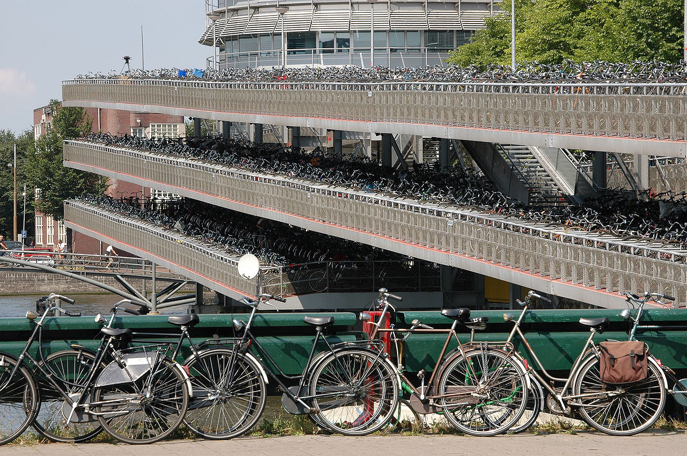
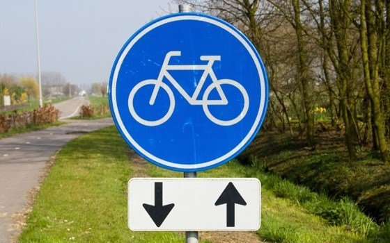
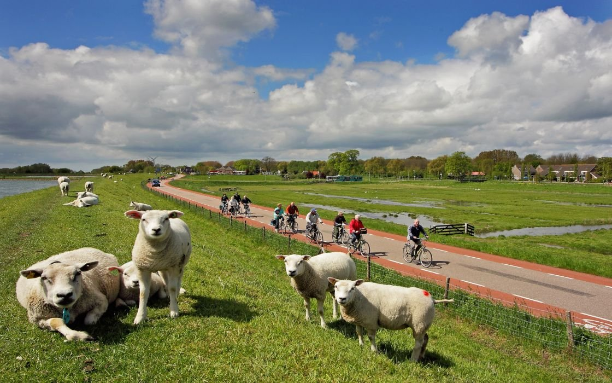

Los parkings
sólo en Amsterdam hay alrededor de 800.000 bicicletas y se estima que un 63% de sus habitantes usa este medio de transporte a diario. Por contra, el número de coches en la ciudad es de 263.000. De hecho, el tráfico en la ciudad queda repartido de esta forma:
-Los desplazamientos en bicicleta suponen el 32%
-El tráfico en coche se queda en un 22%
-El transporte público representa el 16% del tráfico
Si hablamos del centro de la ciudad, el tráfico en bicicleta aumenta hasta el 48%

Muévete fácilmente
No es difícil aprender las normas de circulación holandesas.
Si lo que quieres es ser un ciclista y no perder el tiempo,
una de las mejores maneras de llegar a conocer este país y su gente
es recorrer las ciudades y el campo en bicicleta. El terreno permite
circular sin dificultades, incluso a quienes no están acostumbrados
a montar en bicicleta. Los recorridos en bicicleta son una
forma muy popular de pasear por el campo y de admirar
las ciudades más importantes, como Ámsterdam, Utrecht, La Haya,
y Rotterdam.

En los alrededores
Muchas de las agencias de alquiler de bicicletas de Ámsterdam están alrededor del
sistema de canales, donde siempre hay algo que hacer y ver. Aprovecha el día con tu bicicleta
alquilada y visita alguno de los muchos y famosos museos de Ámsterdam, como el Rijksmuseum o el Museo Municipal.
O acércate al Melkweg en la plaza Leidseplein y disfruta de la actuación en directo de algún grupo.
Un crucero por los canales es también una experiencia que no te puedes perder, aunque si tienes ganas de aventuras.